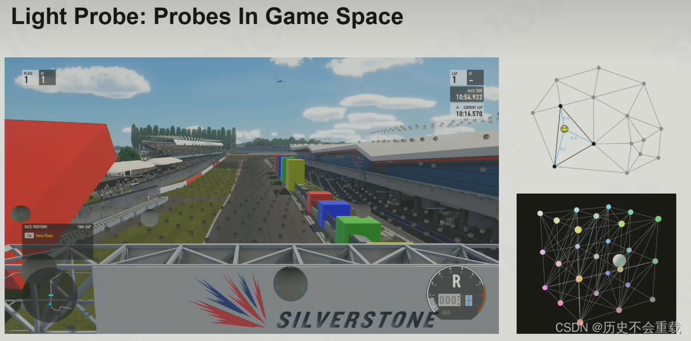

渲染方程
基础光照解决方案
Phong Lighting Model
冯氏光照模型的主要结构由 3 个分量组成：环境（Ambient）、漫反射（Diffuse）和镜面（Specular）光照。下面这张图展示了这些光照分量看起来的样子。

-
环境光照（Ambient Lighting）：即使在黑暗的情况下，世界上通常也仍然有一些光亮（月亮、远处的光），所以物体几乎永远不会是完全黑暗的。为了模拟这个，我们会使用一个环境光照常量，它永远会给物体一些颜色；
-
漫反射光照（Diffuse Lighting）：模拟光源对物体的方向性影响(Directional Impact)。它是冯氏光照模型中视觉上最显著的分量。物体的某一部分越是正对着光源，它就会越亮；
-
镜面光照（Specular Lighting）：模拟有光泽物体上面出现的亮点。镜面光照的颜色相比于物体的颜色会更倾向于光的颜色。
缺点
能量不守恒，出射光线的能量可能会超过入射光线的能量。
Shadow Map
-
先从光的视角获得一张场景的深度图，这个深度就告诉了这个点到光源的距离；
-
再将相机变换到光源的位置，计算点到相机的距离，如果大于先前的深度，则该点在阴影中。

基于预计算的全局光照
全局光照本质是对场景的球面采样。

运用傅里叶变换，可以将上述采样数据投影到频域存储，并且在计算积分时计算量更小。
由此引出了球面调和函数（Spherical Harmonics），在计算积分是时候，只需要将各阶球面调和函数进行线性组合去代表一个光照信号便可以轻松计算。

Lightmap
Lightmap 将场景中所有位置的光照存储了下来。
缺点
-
只适用于静态场景；
-
渲染时间太长。
Light Probe
Light Probe 在空间上采样出 probe，当任何一个物体移动的时候，就会去找临近的 probe 进行插值来计算光照。

缺点
- 光照效果受采样点数量影响。
PBR
判断一种 PBR 光照模型是否是基于物理的，必须满足以下三个条件。
-
基于微平面（Microfacet）的表面模型；
-
能量守恒；
-
应用基于物理的 BRDF。
微平面模型
微平面理论认为，达到微观尺度之后任何平面都可以用被称为微平面的细小镜面来进行描绘。根据平面粗糙程度的不同，这些细小镜面的取向排列可以相当不一致。

产生的效果就是：一个平面越是粗糙，这个平面上的微平面的排列就越混乱。
这些微小镜面这样无序取向排列的影响就是，当我们特指镜面光/镜面反射时，入射光线更趋向于向完全不同的方向发散开来，进而产生出分布范围更广泛的镜面反射。而与之相反的是，对于一个光滑的平面，光线大体上会更趋向于向同一个方向反射，造成更小更锐利的反射。

在微观尺度下，没有任何平面是完全光滑的。然而由于这些微平面已经微小到无法逐像素的继续对其进行区分，因此我们只有假设一个粗糙度参数，然后用统计学的方法来概略的估算微平面的粗糙程度。
我们可以基于一个平面的粗糙度来计算出某个向量的方向与微平面平均取向方向一致的概率。这个向量便是位于光线向量 l 和视线向量 v 之间的中间向量（Halfway Vector），计算方法如下。
$$h=\frac{l+v}{||l+v||} $$
微平面的取向方向与中间向量的方向越是一致，镜面反射的效果就越是强烈越是锐利。然后再加上一个介于0到1之间的粗糙度参数，这样我们就能概略的估算微平面的取向情况了。

较高的粗糙度值显示出来的镜面反射的轮廓要更大一些。与之相反地，较小的粗糙值显示出的镜面反射轮廓则更小更锐利。
能量守恒
微平面近似法使用了这样一种形式的能量守恒：出射光线的能量永远不能超过入射光线的能量（发光面除外）。
如图示我们可以看到，随着粗糙度的上升镜面反射区域的会增加，但是镜面反射的亮度却会下降。如果不管反射轮廓的大小而让每个像素的镜面反射强度都一样的话，那么粗糙的平面就会放射出过多的能量，而这样就违背了能量守恒定律。这也就是为什么正如我们看到的一样，光滑平面的镜面反射更强烈而粗糙平面的反射更昏暗。
为了遵守能量守恒定律，我们需要对漫反射光和镜面反射光之间做出明确的区分。当一束光线碰撞到一个表面的时候，它就会分离成一个折射部分和一个反射部分。
-
反射部分就是会直接反射开来而不会进入平面的那部分光线，这就是我们所说的镜面光照；
-
折射部分就是余下的会进入表面并被吸收的那部分光线，这也就是我们所说的漫反射光照。
通过物理学我们可以得知，光线实际上可以被认为是一束没有耗尽就不停向前运动的能量，而光束是通过碰撞的方式来消耗能量。
每一种材料都是由无数微小的粒子所组成，这些粒子都能如下图所示一样与光线发生碰撞。这些粒子在每次的碰撞中都可以吸收光线所携带的一部分或者是全部的能量而后转变成为热量。

一般来说，并非所有能量都会被全部吸收，而光线也会继续沿着（基本上）随机的方向发散，然后再和其他的粒子碰撞直至能量完全耗尽或者再次离开这个表面。而光线脱离物体表面后将会协同构成该表面的（漫反射）颜色。
不过在基于物理的渲染之中我们进行了简化，假设对平面上的每一点所有的折射光都会被完全吸收而不会散开。而有一些被称为次表面散射技术的着色器技术将这个问题考虑了进去，它们显著的提升了一些诸如皮肤，大理石或者蜡质这样材质的视觉效果，不过伴随而来的则是性能下降代价。
对于金属表面，当讨论到反射与折射的时候还有一个细节需要注意。金属表面对光的反应与非金属材料（也被称为介电质材料）表面相比是不同的。
它们遵从的反射与折射原理是相同的，但是所有的折射光都会被直接吸收而不会散开，只留下反射光或者说镜面反射光。亦即是说，金属表面不会显示出漫反射颜色。由于金属与电介质之间存在这样明显的区别，因此它们两者在 PBR 渲染管线中被区别处理。
反射光与折射光之间的这个区别使我们得到了另一条关于能量守恒的经验结论：反射光与折射光它们二者之间是互斥的关系。无论何种光线，其被材质表面所反射的能量将无法再被材质吸收。因此，诸如折射光这样的余下的进入表面之中的能量正好就是我们计算完反射之后余下的能量。
我们按照能量守恒的关系，首先计算镜面反射部分，它的值等于入射光线被反射的能量所占的百分比。然后折射光部分就可以直接由镜面反射部分计算得出。
float kS = calculateSpecularComponent(...); // 反射/镜面 部分
float kD = 1.0 - ks; // 折射/漫反射 部分
这样我们就能在遵守能量守恒定律的前提下知道入射光线的反射部分与折射部分所占的总量了。按照这种方法折射/漫反射与反射/镜面反射所占的份额都不会超过 1.0，如此就能保证它们的能量总和永远不会超过入射光线的能量。而这些都是我们在前面的光照教程中没有考虑的问题。
BRDF
BRDF，或者说双向反射分布函数，它接受入射（光）方向 $w_{i}$，出射（观察）方向 $w_{o}$，平面法线 $n$ 以及一个用来表示微平面粗糙程度的参数 $a$ 作为函数的输入参数。BRDF 可以近似的求出每束光线对一个给定了材质属性的平面上最终反射出来的光线所作出的贡献程度。举例来说，如果一个平面拥有完全光滑的表面（比如镜面），那么对于所有的入射光线 $w_{i}$（除了一束以外）而言 BRDF 函数都会返回 0.0，只有一束与出射光线 $w_{o}$ 拥有相同（被反射）角度的光线会得到 1.0 这个返回值。
BRDF 基于我们之前所探讨过的微平面理论来近似的求得材质的反射与折射属性。对于一个 BRDF，为了实现物理学上的可信度，它必须遵守能量守恒定律，也就是说反射光线的总和永远不能超过入射光线的总量。严格上来说，同样采用 $w_{i}$ 和 $w_{o}$ 作为输入参数的 Blinn-Phong 光照模型也被认为是一个 BRDF。然而由于 Blinn-Phong 模型并没有遵循能量守恒定律，因此它不被认为是基于物理的渲染。现在已经有很好几种 BRDF 都能近似的得出物体表面对于光的反应，但是几乎所有实时渲染管线使用的都是一种被称为 Cook-Torrance BRDF 模型。
Cook-Torrance BRDF 兼有漫反射和镜面反射两个部分：
$$f_{r}=k_{d}f_{lambert}+k_{s}f_{cook-torrance}$$
这里的 $k_{d}$ 是早先提到过的入射光线中被折射部分的能量所占的比率，而 $k_{s}$ 是被反射部分的比率。BRDF 的左侧表示的是漫反射部分，这里用 $f_{lambert}$ 来表示。它被称为 Lambertian 漫反射，这和我们之前在漫反射着色中使用的常数因子类似，用如下的公式来表示：
$$f_{lambert}=\frac{c}{π}$$
$c$ 表示表面颜色（回想一下漫反射表面纹理）。除以 $π$ 是为了对漫反射光进行标准化，因为前面含有 BRDF 的积分方程是受 $π$ 影响的。
你也许会感到好奇，这个Lambertian漫反射和我们之前经常使用的漫反射到底有什么关系：之前我们是用表面法向量与光照方向向量进行点乘，然后再将结果与平面颜色相乘得到漫反射参数。点乘依然还在，但是却不在BRDF之内，而是转变成为了Lo积分末公式末尾处的n⋅ωi 。
目前存在着许多不同类型的模型来实现 BRDF 的漫反射部分，大多看上去都相当真实，但是相应的运算开销也非常的昂贵。不过按照 Epic 公司给出的结论， Lambertian 漫反射模型已经足够应付大多数实时渲染的用途了。
BRDF 的镜面反射部分要稍微更高级一些，它的形式如下所示：
$$f_{cook−torrance}=\frac{DFG}{4(w_{o}⋅n)(w_{i}⋅n)}$$
Cook-Torrance BRDF 的镜面反射部分包含三个函数，此外分母部分还有一个标准化因子 。字母 D，F 与 G 分别代表着一种类型的函数，各个函数分别用来近似的计算出表面反射特性的一个特定部分。三个函数分别为法线分布函数（Normal Distribution Function），菲涅尔方程（Fresnel Rquation）和几何函数（Geometry Function）：
-
法线分布函数：估算在受到表面粗糙度的影响下，取向方向与中间向量一致的微平面的数量。这是用来估算微平面的主要函数；
-
几何函数：描述了微平面自成阴影的属性。当一个平面相对比较粗糙的时候，平面表面上的微平面有可能挡住其他的微平面从而减少表面所反射的光线；
-
菲涅尔方程：菲涅尔方程描述的是在不同的表面角下表面所反射的光线所占的比率。
以上的每一种函数都是用来估算相应的物理参数的，而且你会发现用来实现相应物理机制的每种函数都有不止一种形式。它们有的非常真实，有的则性能高效。你可以按照自己的需求任意选择自己想要的函数的实现方法。